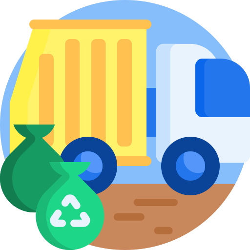

Cápsula Informativa
Cápsula realizada para el área de servicios municipales del municipio de Celaya con la finalidad de dar a conocer el área a la gente.
Ver
Testimonial
Cápsula realizada para dar a conocer los resultados de una de las personas beneficiadas por un programa de Desarrollo Económico.
Ver
Servicio de Stream
Ejemplo de una transmisión en vivo que se realiza para la revista "Tu punto de encuentro" en su programa "Café con Nosotras".
Ver